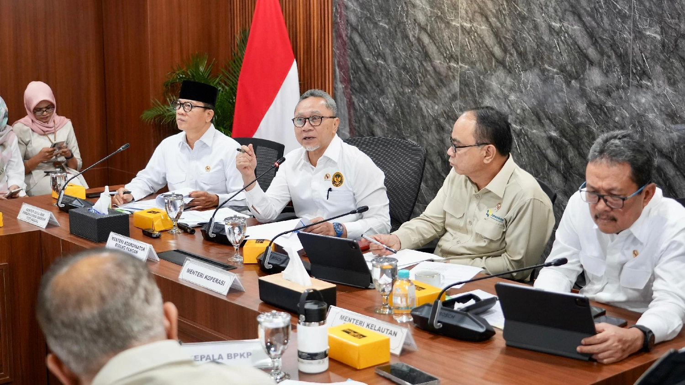
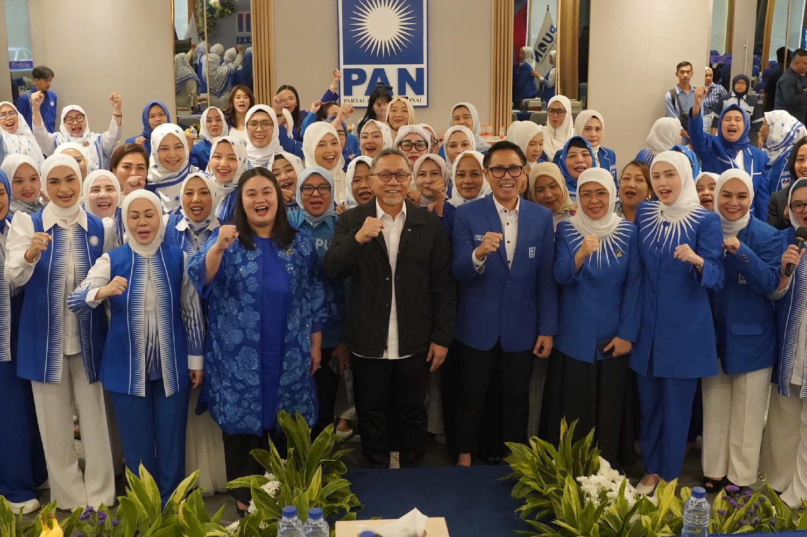
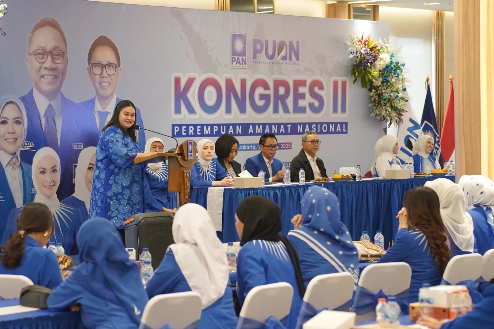
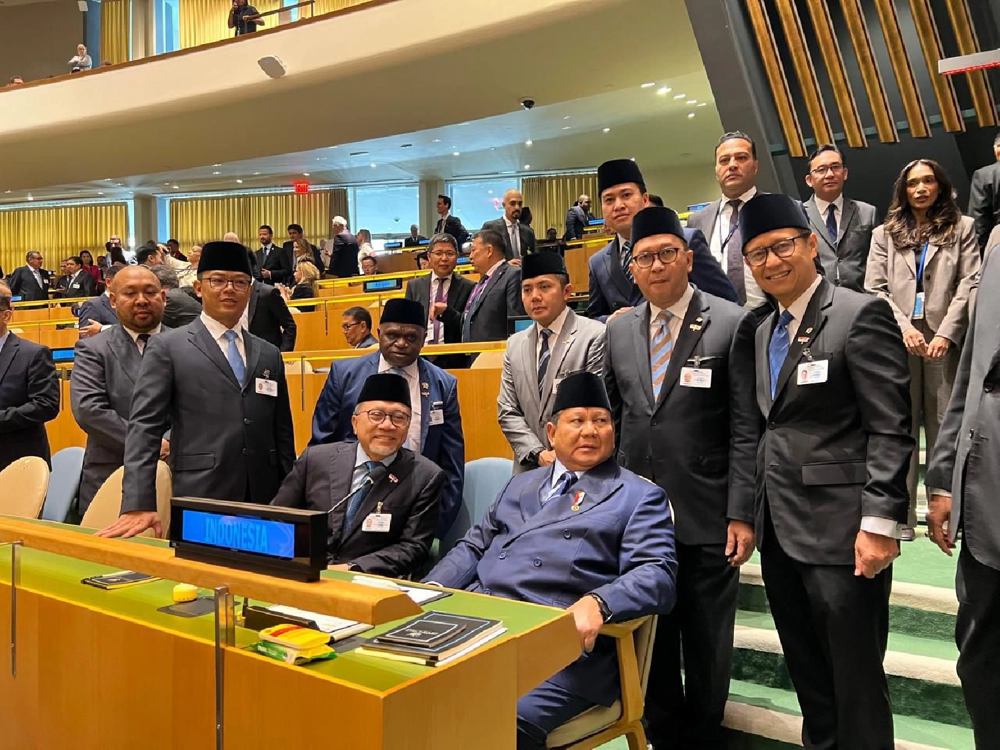
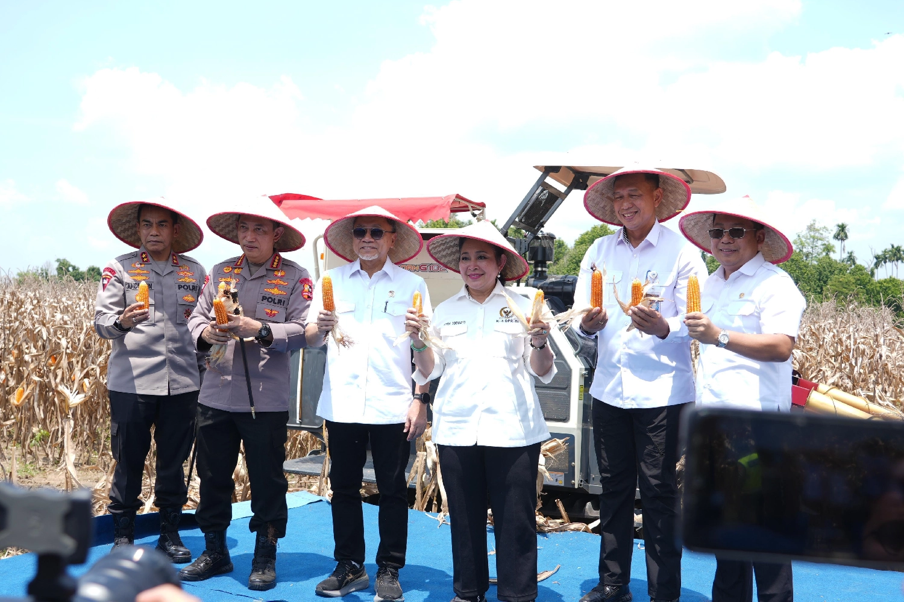
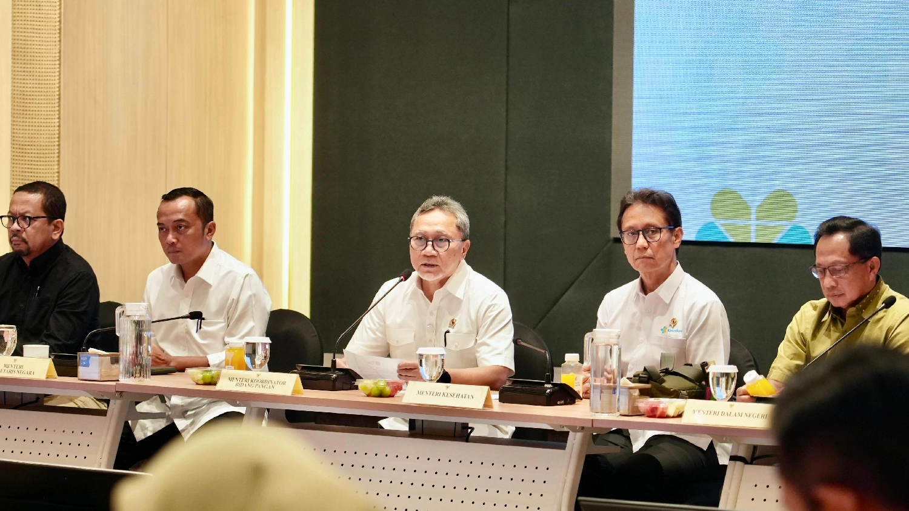
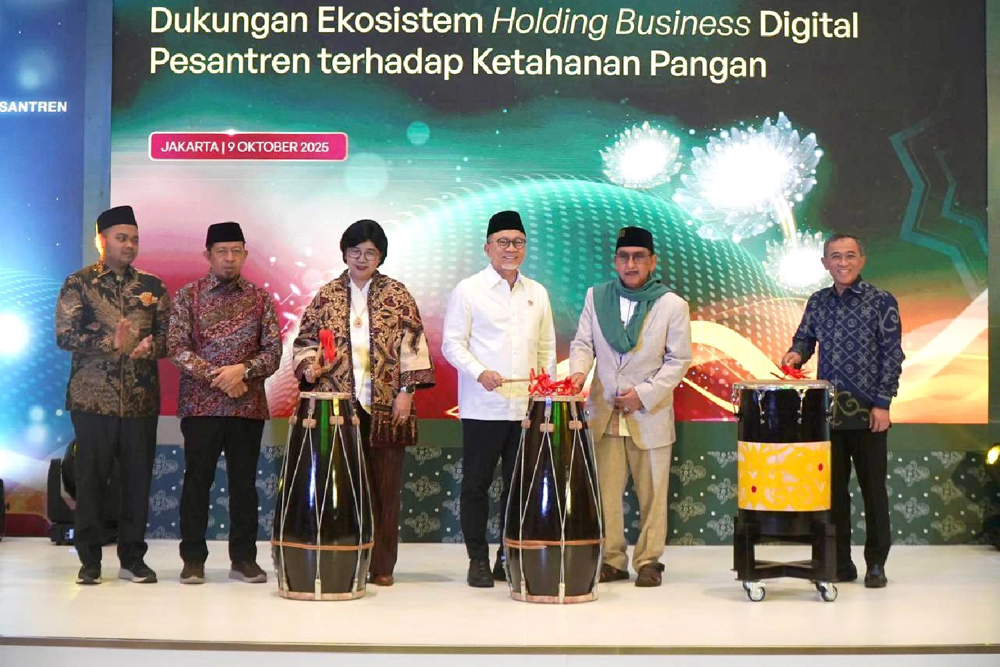
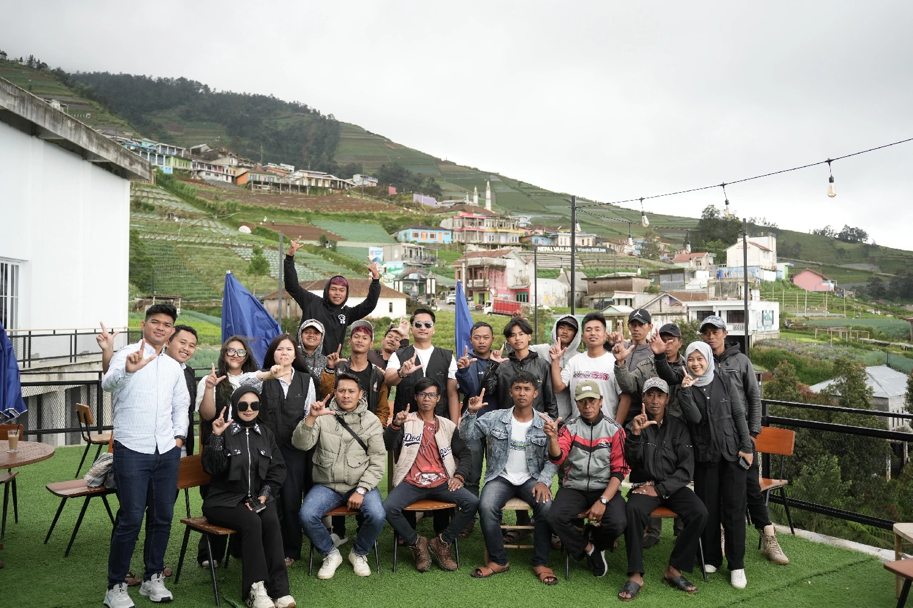

Memperkuat Demokrasi Melalui Kolaborasi Antar-Lembaga
Mengoptimalkan peran partai politik dalam membangun tata kelola pemerintahan yang transparan dan akuntabel untuk kesejahteraan rakyat.









Kebijakan Publik
Pemuda & Olahraga

Sosial Budaya